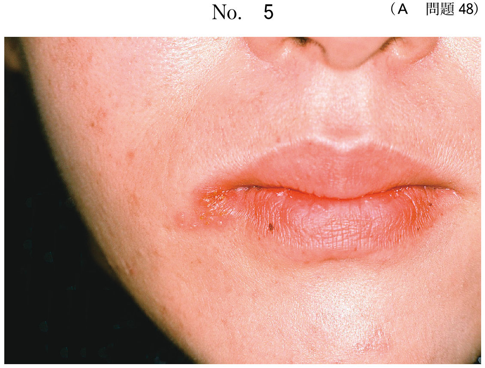

| 種類 | 目的 | 力の大きさ |
|---|---|---|
| 狭義の矯正力 | 歯の移動 | 約100gf（弱い力） |
| 顎整形力 | 顎骨の移動・変形 | 強い力 |
| 種類 | 発生源 | 代表的装置 |
|---|---|---|
| 器械的矯正力 | ワイヤー、エラスティック、拡大ネジ等 | マルチブラケット装置、拡大装置 |
| 機能的矯正力 | 筋肉、靱帯、粘膜の機能力 | アクチバトール、Fränkel装置、リップバンパー |
矯正力は力の減衰様相から3種類に分類される。
| 作用様式 | 英語 | 特徴 | 代表的装置 |
|---|---|---|---|
| 持続的な力 | Continuous | 力の減衰が緩やか | 矯正用ワイヤー、エラスティック、リンガルアーチ |
| 断続的な力 | Interrupted | 急激に減衰→ゼロ→再上昇 | 急速拡大装置（拡大ネジ） |
| 間歇的な力 | Intermittent | 装着時のみ発現 | ヘッドギア、チンキャップ、上顎前方牽引装置 |
| 固定 | 固定源の位置 | 代表的装置 |
|---|---|---|
| 顎内固定 | 同一顎内 | リンガルアーチ、急速拡大装置、トランスパラタルアーチ |
| 顎間固定 | 対顎 | II級ゴム、III級ゴム、垂直ゴム |
| 顎外固定 | 頭部・頸部 | ヘッドギア、チンキャップ、上顎前方牽引装置 |
急速拡大装置が最も強い矯正力を発揮する（正中口蓋縫合を離開させるため）。
矯正装置装着時の口腔内写真（別冊No.6）を別に示す。
この装置の矯正力の作用様式と歯の移動様式との組合せで正しいのはどれか。1つ選べ。

【解説】図は舌側弧線装置（リンガルアーチ）。矯正用ワイヤーによる力なので持続的な力。歯冠に力が加わり歯根を支点に傾斜するので傾斜移動。
矯正装置について正しい組合せはどれか。1つ選べ。
【解説】リンガルアーチは矯正用ワイヤーによる持続的な力、同一顎内に固定源を求める顎内固定。
a：ヘッドギアは間歇的な力（夜間装着）
b：チンキャップは顎外固定（頸部に固定源）
c：急速拡大装置は顎内固定（同一顎内）
e：上顎前方牽引装置は顎外固定
顎整形力を発揮するのはどれか。すべて選べ。
【解説】顎整形力は顎骨の移動・変形を目的とする強い力。ヘッドギア（上顎成長抑制）、急速拡大装置（正中口蓋縫合離開）、上顎前方牽引装置（上顎成長促進）が該当。リンガルアーチとマルチブラケット装置は歯の移動のみ。
最も強い矯正力を発揮するのはどれか。1つ選べ。
【解説】急速拡大装置は正中口蓋縫合を離開させるため、最も強い矯正力（数kg）を発揮する。他の装置は歯の移動が主目的で、比較的弱い力を用いる。
参考：新しい歯科矯正学 p.64-66, p.140-142